Honor of Kings: ACE
Launch & Rewards Preview
Pre-download is now available. The game launches on all supported platforms on September 10 at 07:00.
How to download
- Android and HarmonyOS: Find the game through QQ, WeChat, app stores, or game centers. You can also use the ACE section in King’s Camp or the download message from the official ACE — Bai Ge WeCom service account.
- iOS: Find the game in the App Store.
- PC: Download the official PC client from wxq.qq.com, or find the game in WeGame.
ACE supports Android, iOS, HarmonyOS, and PC, with shared progress across all platforms.

Launch gifts include HOK limited-time tokens and Arli’s new skin, plus ACE Treasure Coins, Epic boards, and more. Here are the rewards available across both games.
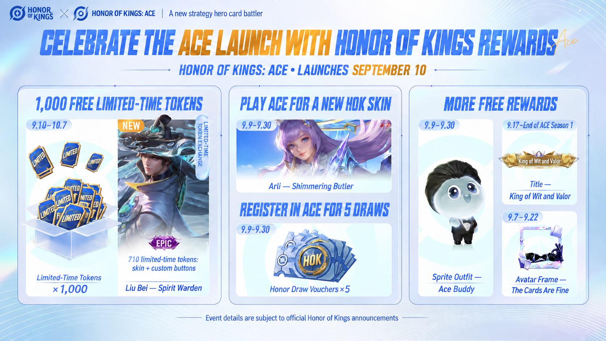
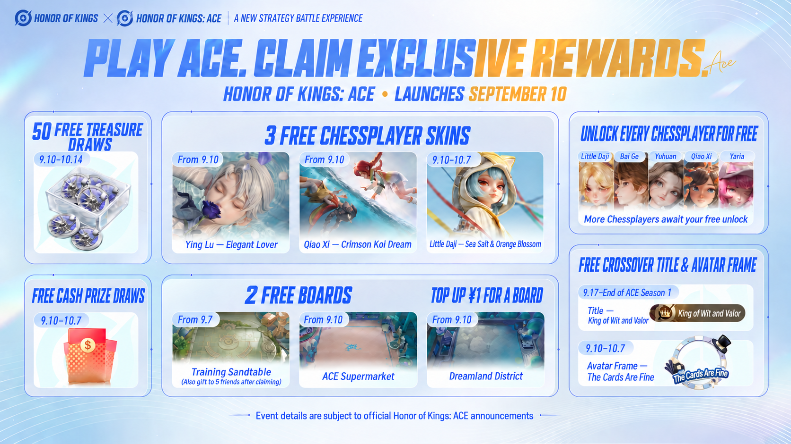
Honor of Kings crossover rewards
Lucky bags: free HOK limited-time tokens
September 10, after launch – October 7, 23:59
Log in each day and open lucky bags to collect Honor of Kings limited-time tokens. Play Honor of Kings: ACE to earn them faster, up to a total of 1,000. Log in on 7 days to claim the Little Daji — Sea Salt & Orange Blossom skin in ACE. Golden lucky bags also offer a chance to win cash; reach Silver rank to withdraw it.
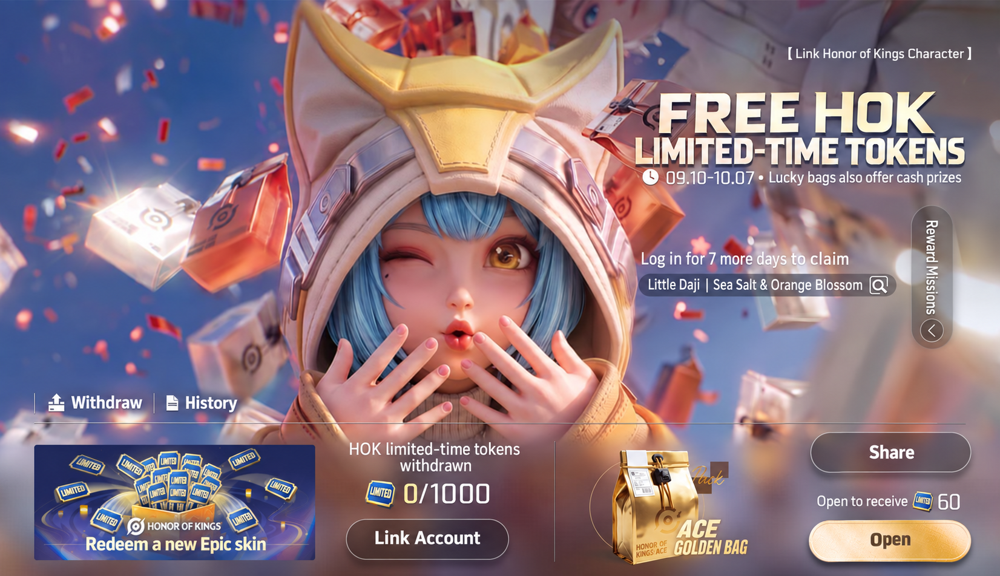
Claim Arli’s new Honor of Kings skin
September 10, after launch – September 30, 23:59
Register in ACE to receive 5 Honor Draw Vouchers. Complete 1 ACE match each day to advance through the event stages and claim HOK Star Coins, limited-time voice lines, a Sprite outfit, and ACE Rose Coins. The final reward is Arli’s new Shimmering Butler skin in Honor of Kings.
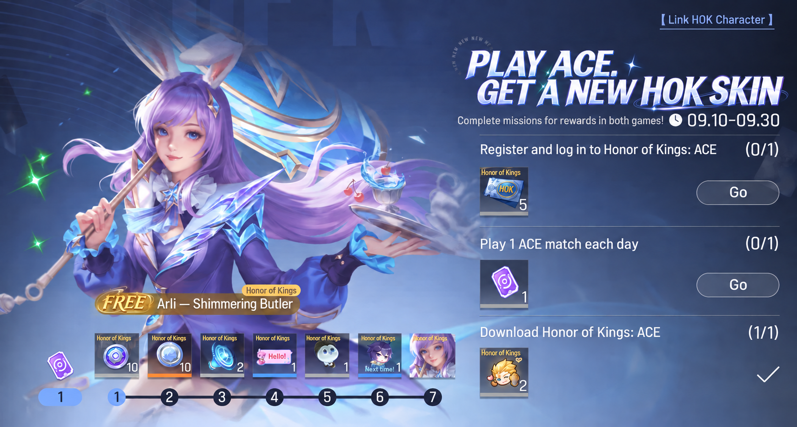
Find your perfect Chessplayer
September 7 – October 7, 23:59
Take the quiz to discover your ACE Chessplayer match. Participate to receive The Cards Are Fine avatar frame in Honor of Kings. Players who previously played HOK Simulation Battle, and players who join through a friend’s shared link, can also claim the exclusive Training Sandtable board in ACE.
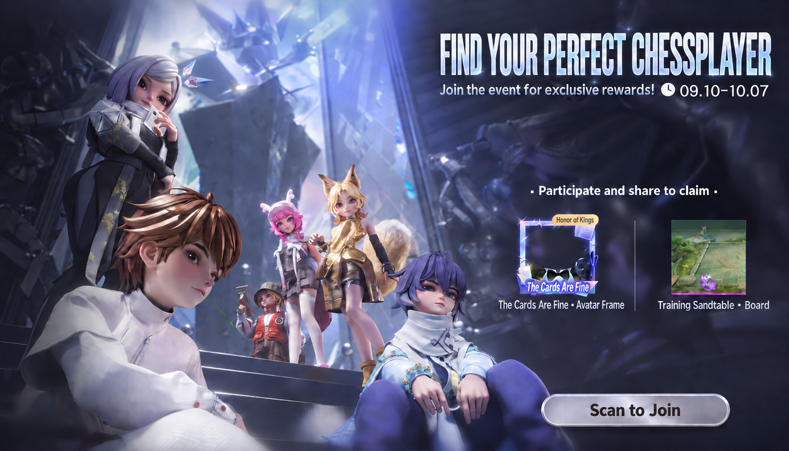
Honor of Kings: ACE launch rewards
Free Treasure Coins at launch
Launch events and ongoing season rewards
Join the ACE City reward collection from September 10, after launch, through October 14 at 23:59. Level up your Growth Journey: every 5 levels from Level 5 to Level 40 awards 30 Treasure Coins, for up to 240 in total. Climb the ACE Tournament ranks to claim up to 60 more Treasure Coins through the ongoing season rewards. The Seven Steps to Victory event also awards 6 Treasure Coins on your fourth login day. Use them to draw for collection rewards.
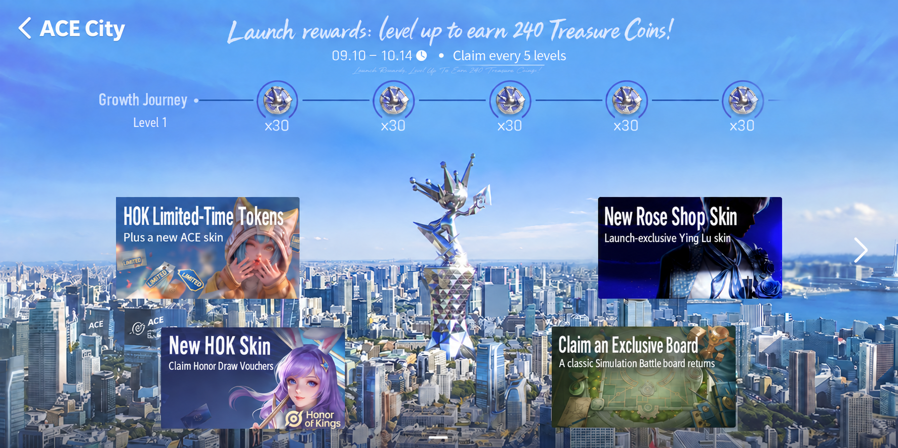
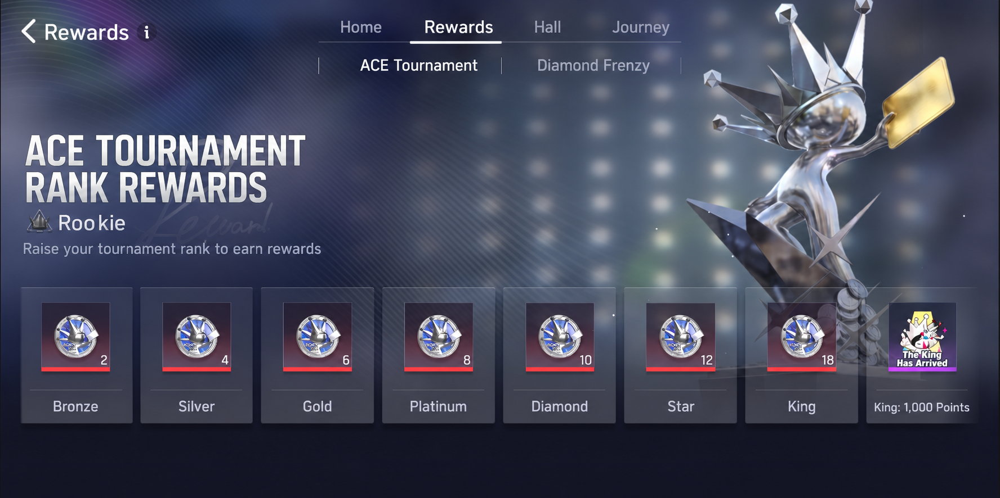
Earn Rose Coins for Ying Lu — Elegant Lover
September 10, after launch – October 14, 23:59
Climb the ranks to earn Rose Coins. Rank milestones award 200 in total: Silver 20, Gold 30, Platinum 40, Diamond 50, and Star 60. From Platinum onward, post-match card flips can award additional Rose Coins.
Spend Rose Coins in the ongoing S1 exchange on skins such as Ying Lu — Elegant Lover. A skin costs 200 Rose Coins; avatars, avatar frames, emotes, and chat bubbles cost 50 each.
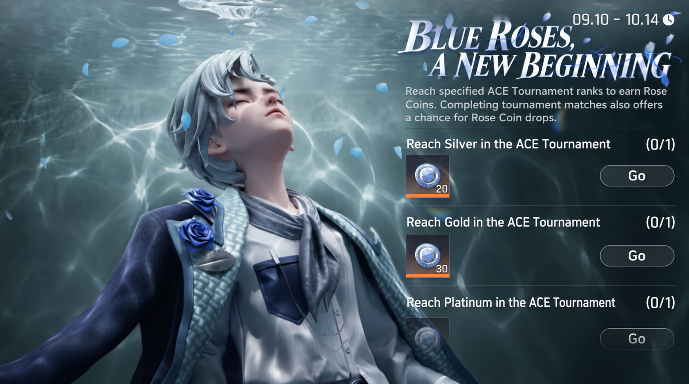
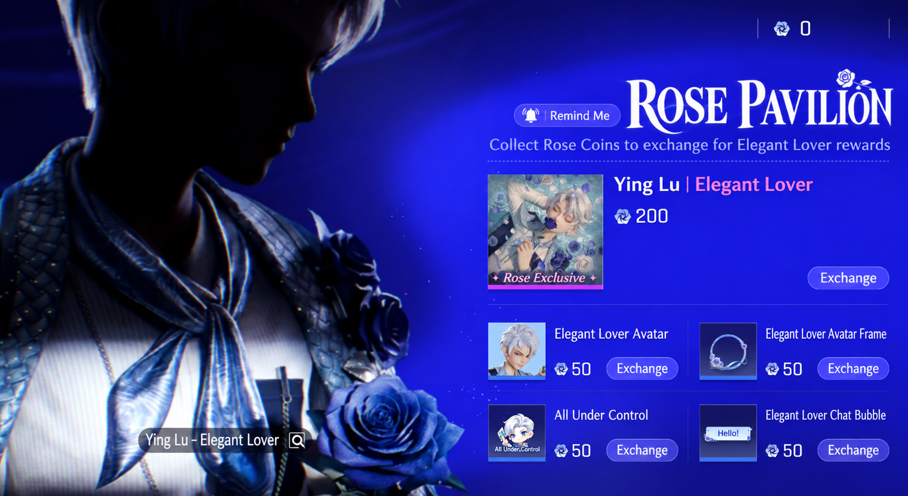
Seven-day login: a Chessplayer and a board
From September 10 • Ongoing
Unlocked after launch. Log in on 7 days to claim a reward each day: Day 1 — 200 Diamonds; Day 2 — Zhuang Xiaoyu Chessplayer; Day 3 — 1 Lineup Slot Card; Day 4 — 6 Treasure Coins; Day 5 — Dimensional Collapse attack effect for 30 days; Day 6 — Random Chessplayer Trial Card for 3 days; Day 7 — ACE Supermarket board.
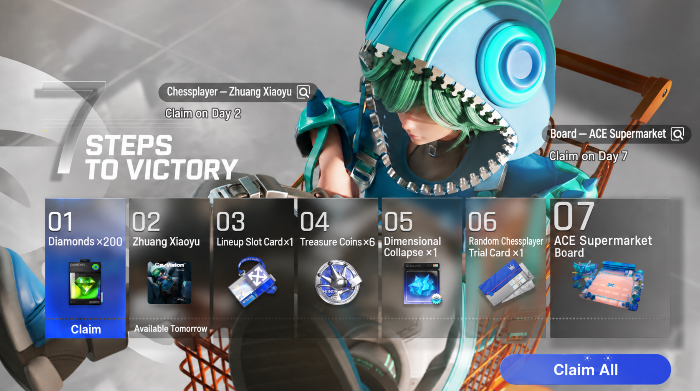
Begin your journey: a Chessplayer and a skin
From September 10 • Ongoing
Eight days of missions unlock in sequence after launch. Complete 3 daily missions to earn 15 Journey Points. Exchange points for the Qiao Xi Chessplayer and Qiao Xi — Crimson Koi Dream skin. Complete every mission to unlock challenge missions that award another 500 Diamonds. These challenge missions have a 90-day time limit.
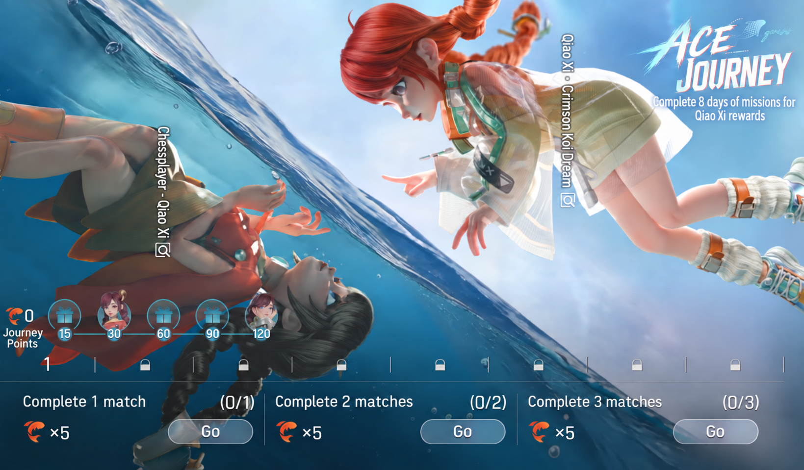
Complete practice stages to unlock Naonao
From September 10 • Ongoing
Complete any 3 reinforcement practice stages to claim the Naonao Chessplayer. These stages help you move into training matches and learn basic lineups and battle techniques.
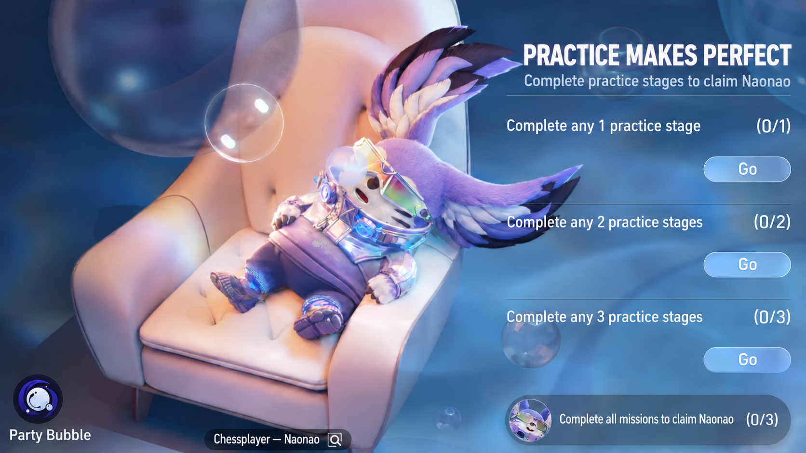
Link HOK and ACE data for an avatar frame
September 10, after launch – October 7, 23:59
Authorize the sharing of friend online status, Intimacy, and Sprite data between the two games to receive the ACE-exclusive The Cards Are Fine avatar frame.
Wang Wei event: a chat bubble
September 10, after launch – October 7, 23:59
Join the new hero Wang Wei for an encounter across a thousand years. Complete the designated event missions to receive 200 Diamonds and the Voices in the Empty Mountains chat bubble.
King rank milestones
September 10, after launch – December 9, 23:59
Work together across the server to reach King rank. As more players reach King, server-wide milestones unlock Diamond rewards and modes such as Diamond Frenzy and Ace Showdown. See the in-game event page for the exact milestones and rewards. The first 9,999 players on the server to reach King also earn an exclusive Launch Founder title, numbered according to their order of achievement. Claim it through the achievement system.
Raise a Super Ace hero
September 10, after launch – October 7, 23:59
Raise your favorite hero to Level 100 in ranked matches to earn votes for that hero. Participate each week to receive 1 random Tier 1 Hero Card, up to 5 cards during the event.
Fast track to ACE mastery
Ongoing
Complete 4 challenge missions to become an ACE expert and earn up to a 100% bonus to rank points. This event and its rank-point bonus end when you reach Platinum, and its entry disappears.
Team up with an expert
September 10, after launch – December 9, 23:59
Players at Platinum or above are Experts; players below Platinum are Rising Stars. An Expert and a Rising Star can form a one-to-one partnership. The mentoring is complete when the Rising Star reaches Platinum. Experts earn rewards based on how many players they help: avatar frames, Intimacy items, and rank-protection cards for Platinum, Diamond, Star, and King. A leaderboard tracks the server’s most successful mentors.
One-to-one coaching
September 10, after launch – December 9, 23:59
Receive coaching for the first time to claim 100 Diamonds once. Coach other players 1, 3, 5, and 10 times to earn Diamond rewards. Coaching 200 times also awards an exclusive title through the achievement system. A successful coaching session requires finishing the match together with your student and placing in the top three.
ACE guide videos
September 10, after launch – September 23, 23:59
Watch the launch tutorial videos to learn about ACE Season 1. Watch each video for at least 10 seconds to claim 50 Diamonds for that video.
Share the wins
September 10, after launch – December 9, 23:59
Play together for rewards. Complete 1 match in a team to receive an emote, 3 team matches to receive an Intimacy item, and 5 team matches to receive another emote.
Log in on mobile and PC for Diamonds
September 10, after launch – December 9, 23:59
Log in on mobile to claim 200 Diamonds, then log in on PC to claim another 200. The event entry disappears after completion.
Season journey
September 10, after launch – December 9, 23:59
Beta players can review their beta data and see the beta-related rewards carried over to launch. All players can use the Season Journey to explore the current season’s new content and progress.
Launch discounts
Top up ¥1 for an exclusive board
From September 10, after launch • Ongoing
Join the One-Yuan Gift event and top up ¥1 to receive the Epic Dreamland District board, valued at 888 Tokens. After topping up, return to the One-Yuan Gift event page to claim the board.
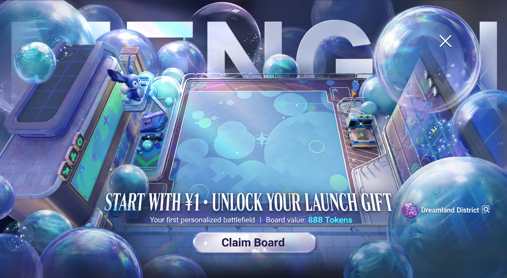
Naonao — Feeling Blue flash sale
September 10, after launch – September 23, 23:59
The Naonao — Feeling Blue Fun skin, valued at 488 Tokens, is available for 60 Tokens during the event.
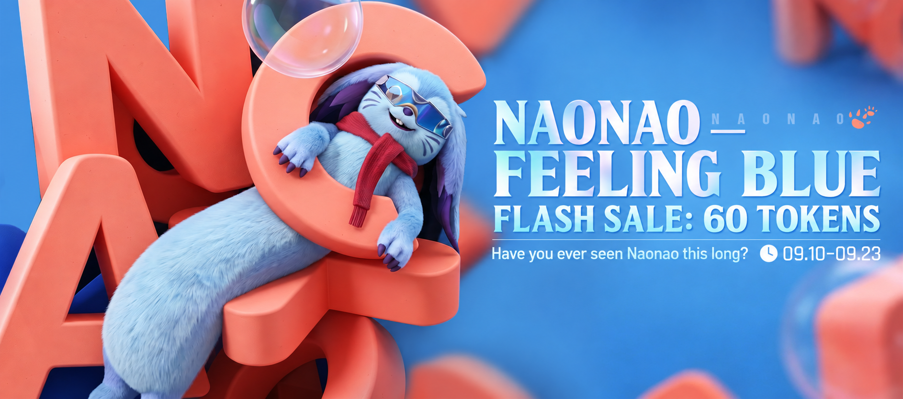
Shop skins: up to 50% off
September 10, after launch – September 23, 23:59
Shop skins have limited-time launch discounts. Epic skins are 50% off, and new Legendary skins are 20% off. Crossed-out prices indicate the planned non-event prices after this promotion ends; actual prices are those shown in the shop at that time.
First 50 Treasure bundles: half price
September 10, after launch – September 23, 23:59
Treasure draws offer a chance to obtain an ACE Crystal, which can be exchanged for the Ink Dragon collection skin or the Sea of Clouds Dreamscape collection board. During the event, your first 50 purchases of the Treasure bundle are 50% off: 30 Tokens for 6 Treasure Coins instead of the regular 60 Tokens.
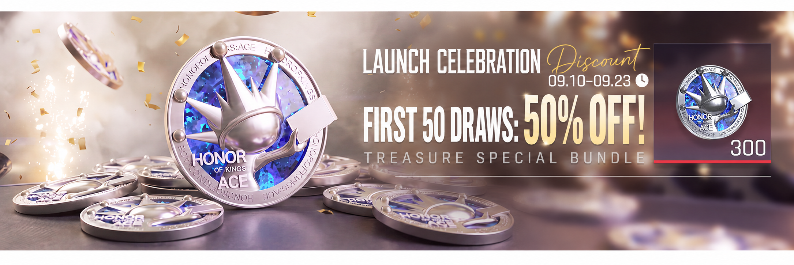